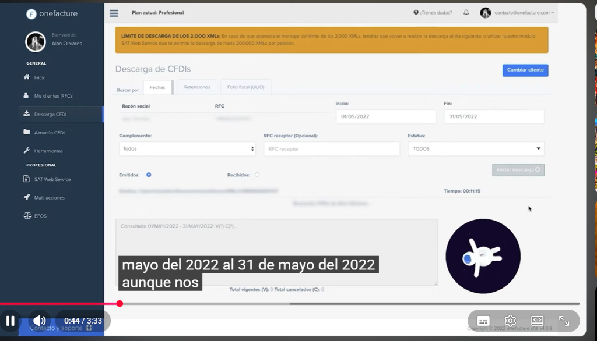
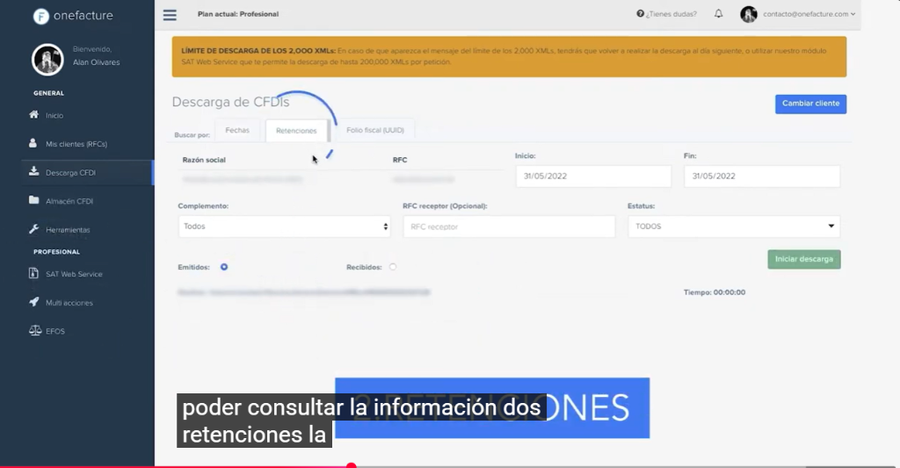
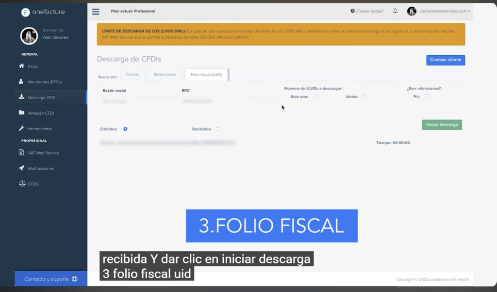
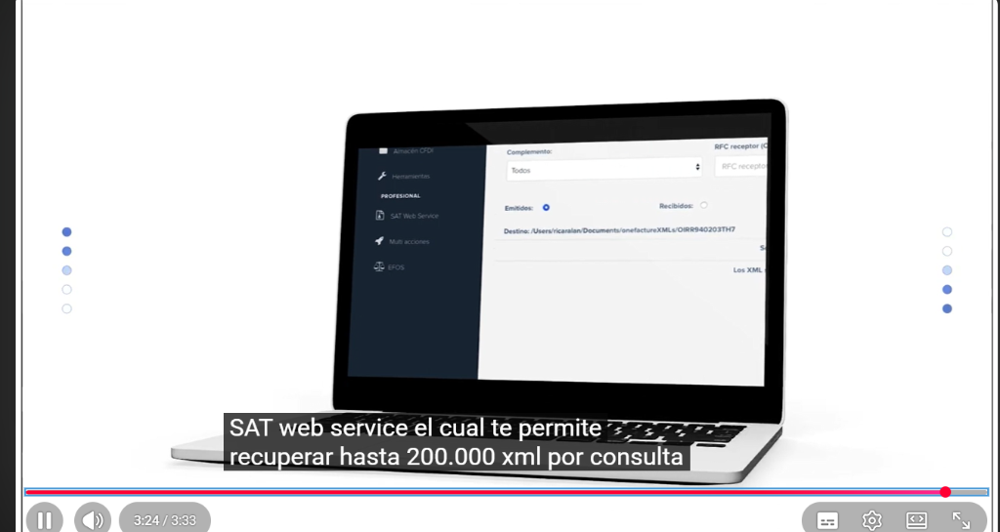
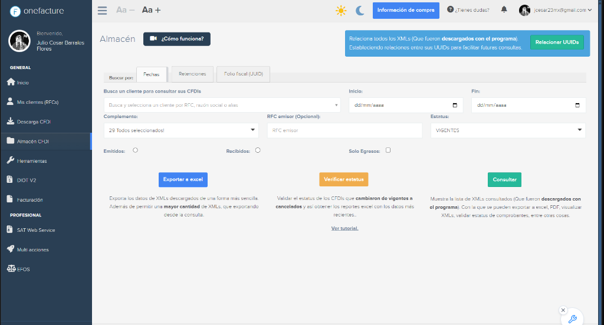
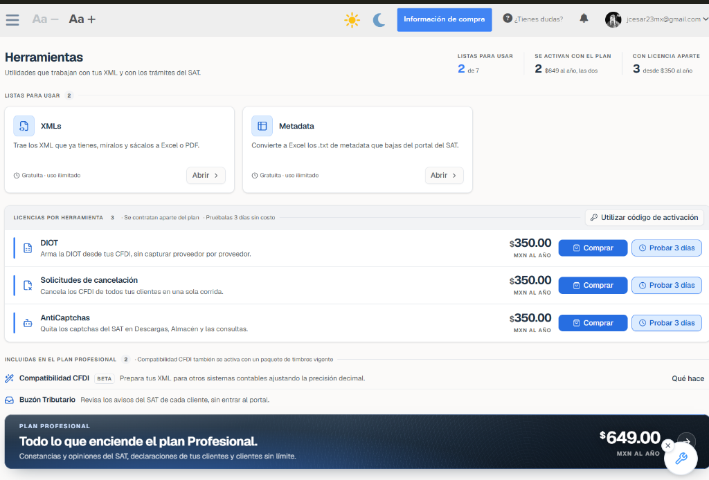
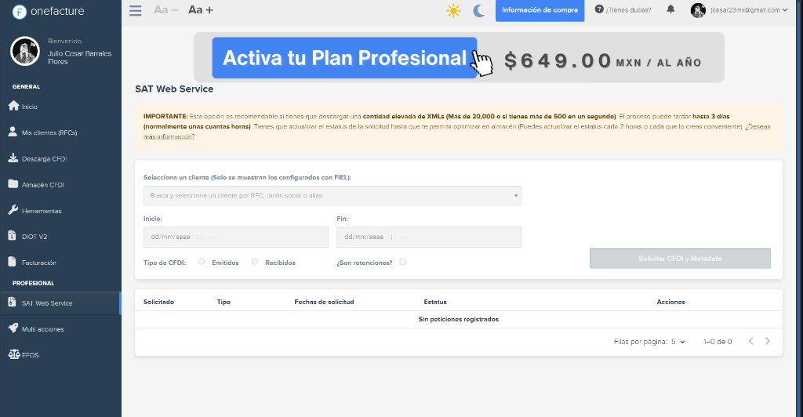

Repositorio central e interfaz de extracción automatizada de Comprobantes Fiscales Digitales por Internet (CFDI 4.0, Retenciones 2.0, Complementos de Pago y Nómina) y Metadata del SAT para el Poder Judicial del Estado de Veracruz. Integra Descarga Directa (hasta 2,000 XMLs), SAT Web Service con e.firma (hasta 200,000 XMLs / 1,000,000 Metadata), Almacén con relación automática de UUIDs y Herramientas Plus.
/cfdi/boveda · /cfg/documentos
API: /api/v1/cfdi/boveda
El módulo 07.1.1 Bóveda CFDI, Almacén y Descarga SAT (Administrador de XML) es el punto único de entrada, resguardo y consulta de todos los comprobantes fiscales digitales (.xml, su representación impresa .pdf y los paquetes de Metadata .txt) tanto Recibidos de proveedores, contratistas, arrendadores y prestadores de servicios, como Emitidos por el Poder Judicial del Estado de Veracruz (recibos de nómina timbrados, ingresos propios, arrendamientos y reintegros).
Su arquitectura resuelve cuatro necesidades críticas de operación fiscal y gubernamental:
V) y cancelados (C).
e.firma institucional.
UUID y huella criptográfica SHA-256. Incorpora la acción [Relacionar UUIDs] para armar automáticamente el árbol entre facturas PPD, Complementos de Pago (REP 2.0), Notas de Crédito (TipoRelacion 01) y CFDI sustituidos (TipoRelacion 04), así como los botones directos [Exportar a Excel], [Verificar estatus] (detectando facturas que cambiaron de vigentes a canceladas) y [Consultar]..txt de Metadata del SAT a Excel conciliándolos contra el almacén, resolver retos de consulta (AntiCaptchas) y validar la Compatibilidad de Precisión Decimal frente a las partidas presupuestales y contables.Conforme a las directrices de arquitectura del SIAF-PJEV, se distingue expresamente entre requisito normativo, regla institucional del PJEV y propuesta tecnológica / referente funcional externo:
| Naturaleza | Norma / Instrumento / Fuente | Obligación y Consecuencia Técnica en el SIAF-PJEV |
|---|---|---|
| Requisito Normativo | Código Fiscal de la Federación (CFF) · Arts. 29, 29-A y 30; Anexo 20 RMF (CFDI 4.0) | Obligación de recibir, validar y conservar los CFDI en su formato original .xml como único comprobante fiscalmente válido durante los plazos de ley, verificando sello digital, RFC receptor del PJEV, régimen fiscal, uso del CFDI y desglose de impuestos. |
| Requisito Normativo | Lineamientos Técnicos del Web Service de Descarga Masiva del SAT (v1.5) | Establece el protocolo SOAP autenticado exclusivamente con e.firma (FIEL) vigente en 3 etapas (Autenticación/Solicitud, Verificación y Descarga), con tope de 200,000 XMLs por petición, 1,000,000 de registros en Metadata, ventana de respuesta de hasta 72 horas y vigencia de descarga de paquetes .zip por 72 horas (máximo 2 descargas por paquete). |
| Requisito Normativo | LGCG Arts. 4 (fracc. XIV–XVII), 42 y 43 y Acuerdos CONAC (Momentos del Egreso) | Toda póliza de devengado y pago debe estar respaldada por su documentación comprobatoria y justificativa identificada por UUID. Regla crítica CONAC: La descarga o carga de un CFDI en la Bóveda no detona por sí sola el momento contable del Devengado; el devengado exige la recepción conforme del bien, servicio o estimación de obra en Recursos Materiales (08.3.4) o la autorización del trámite en Cuentas por Pagar (05.2.1). |
| Regla Institucional | Manual Específico de Procedimientos de Recursos Financieros y Recursos Materiales PJEV (Feb 2023) | En los procedimientos de Recepción y revisión de gastos (pág. 124), Adquisiciones, Entradas de Almacén y Alta de Activo Fijo, el área revisora debe cotejar que los conceptos, cantidades e importes del CFDI coincidan con el pedido, contrato, vale de entrada o resguardo patrimonial antes de autorizar el pago. |
| Propuesta Tecnológica | Referente funcional externo de interfaz: Módulo de Descarga, Almacén, Web Service y Herramientas (Onefacture v4.0.9 / Video Vl4qRXLMxmM y Especificación Fuente) |
Organización de la interfaz en 3 pestañas de búsqueda (Fechas, Retenciones, Folio fiscal UUID), banner preventivo del límite de 2,000 XMLs vs. 200,000 XMLs en Web Service, botón [Relacionar UUIDs], selector de los 29 complementos del SAT, filtro Solo Egresos, tríada de acciones (Exportar a excel, Verificar estatus, Consultar) y utilidades de conversión de Metadata .txt. |
El módulo 07.1.1 integra cuatro áreas funcionales acopladas a un mismo repositorio PostgreSQL (cfdi.boveda_comprobantes):
| Sub-módulo / Vista | Opciones y Pestañas | Parámetros de Entrada y Filtros | Comportamiento y Salida en SIAF-PJEV |
|---|---|---|---|
| 3.1 Descarga CFDI (Básica / Portal SAT) |
• Pestaña 1: Fechas• Pestaña 2: Retenciones• Pestaña 3: Folio fiscal (UUID)
|
• Razón Social y RFC del Ente (PJEV) • Rango Inicio y Fin (dd/mm/aaaa)• Complemento (Todos o específico)• RFC receptor / emisor (Opcional)• Estatus (TODOS, VIGENTES, CANCELADOS)• Radio: Emitidos / Recibidos• En UUID: Radio Solo uno / Varios y checkbox ¿Son retenciones?
|
Ejecuta la consulta directa al SAT con resolución automatizada de reto visual (AntiCaptchas). Muestra cronómetro en vivo (Tiempo: 00:11:15), bitácora por día consultado, contadores Total vigentes (V) y Total cancelados (C), y guarda automáticamente los XML en el Almacén. Si detecta el tope de 2,000 XMLs, sugiere usar SAT Web Service.
|
| 3.2 SAT Web Service (Descarga Masiva FIEL) |
• Solicitud asíncrona SOAP • Monitor de Peticiones Registradas |
• Entidad configurada con e.firma (FIEL) • Fecha y hora Inicio (dd/mm/aaaa hh:mm)• Fecha y hora Fin (dd/mm/aaaa hh:mm)• Tipo de CFDI: Emitidos / Recibidos• Checkbox: ¿Son retenciones?• Botón: [Solicitar CFDI y Metadata]
|
Recomendado para más de 20,000 XMLs o más de 500 por segundo (hasta 200,000 XMLs o 1,000,000 Metadata por petición). Registra el IdSolicitud del SAT; permite actualizar estatus cada 2 horas (plazo SAT de horas hasta 3 días) y, al pasar a Terminada, descarga los paquetes .zip y los optimiza e indexa en el Almacén.
|
| 3.3 Almacén CFDI |
• Pestañas: Fechas, Retenciones, Folio fiscal (UUID)• Acción superior: [Relacionar UUIDs]
|
• Rango Inicio y Fin• Complemento: Selector múltiple de los 29 complementos del SAT• RFC emisor (Opcional)• Estatus (VIGENTES, CANCELADOS, TODOS)• Radio Emitidos / Recibidos• Checkbox: Solo Egresos (Notas de crédito)
|
Ofrece tres acciones operativas diferenciadas: 1) [Exportar a excel]: descarga masiva directa sin saturar el navegador.2) [Verificar estatus]: valida en lote qué CFDIs cambiaron de vigentes a cancelados en el SAT.3) [Consultar]: abre el grid de resultados con visor XML/PDF y estado de vinculación en SIAF-PJEV.
|
| 3.4 Herramientas Plus |
• XMLs (Lector local)• Metadata (Conversor .txt)• Compatibilidad CFDI• AntiCaptchas
|
• Carga Drag & Drop de archivos .xml o .zip locales• Carga de archivos .txt de Metadata bajados del portal del SAT• Reglas de redondeo y tolerancia decimal (2 decimales) |
Permite incorporar XMLs históricos que ya tenía la institución, convertir a Excel los archivos .txt de Metadata del SAT cruzándolos contra la bóveda para identificar comprobantes faltantes, y normalizar diferencias de centavos por truncamiento/redondeo de impuestos para las pólizas contables.
|
| Rol Institucional | Nivel | Acciones Permitidas | Restricciones y Segregación |
|---|---|---|---|
| Administrador Fiscal (Subdirección de Recursos Financieros / Contabilidad) | Nivel 2 | Configurar credenciales de consulta y resguardo de e.firma institucional en bóveda criptográfica; ejecutar descargas masivas por Portal y SAT Web Service; ejecutar [Relacionar UUIDs] y [Verificar estatus] masivo. |
La llave privada (.key) y su contraseña se procesan exclusivamente en memoria del servidor backend; jamás se exponen ni descargan en el navegador del cliente. |
| Analista Operativo (Adquisiciones / Almacén / CxP / Viáticos / Ingresos) | Nivel 3 | Cargar archivos .xml y .pdf de trámites específicos, descargar por Folio fiscal (UUID), consultar el Almacén CFDI y vincular comprobantes vigentes a sus expedientes. |
No puede eliminar ni desactivar un CFDI que ya se encuentre vinculado a una recepción, entrada de almacén, afectación de gasto, orden de pago o póliza contable. |
| Órgano Interno de Control / Auditoría / ORFIS | Nivel 4 | Consultar el Almacén CFDI, exportar sabanas en Excel/PDF, cotejar archivos de Metadata .txt y verificar la integridad SHA-256 y vigencia SAT. |
Acceso de solo lectura estricta; sin permisos de carga ni modificación de vínculos. |
cfdi)El almacenamiento se estructura en el esquema cfdi de PostgreSQL. Cada archivo binario (.xml, .pdf, .txt) se registra en archivos.documento con su hash SHA-256, mientras que sus nodos fiscales estructurados se persisten en las siguientes cinco tablas:
| Campo | Tipo | Nulo | Descripción y Regla de Validación |
|---|---|---|---|
cfdi_id | BIGSERIAL PK | No | Identificador interno único del comprobante en la bóveda. |
uuid | UUID UNIQUE | No | Folio Fiscal oficial del Timbre Fiscal Digital (36 caracteres, único en toda la bóveda). |
f_entidad_id / ejercicio | INTEGER | No | Entidad del PJEV y ejercicio fiscal correspondiente a la fecha de emisión/aplicación. |
direccion_flujo | VARCHAR(12) | No | RECIBIDO (Proveedores/Contratistas/Viáticos) o EMITIDO (Nómina/Ingresos PJEV). |
es_retencion | BOOLEAN | No | true si corresponde a un CFDI de Retenciones e Información de Pagos 2.0. |
version_cfdi | VARCHAR(5) | No | Versión del estándar Anexo 20 (4.0, 3.3, 2.0 para retenciones). |
tipo_comprobante | CHAR(1) | No | I (Ingreso), E (Egreso / Nota de crédito), P (Pago REP 2.0), N (Nómina), T (Traslado). |
serie / folio | VARCHAR(25) / VARCHAR(40) | Sí | Serie y folio comercial asignados por el emisor. |
fecha_emision / fecha_timbrado | TIMESTAMPTZ | No | Fechas oficiales del nodo Comprobante y TimbreFiscalDigital. |
rfc_emisor / nombre_emisor | VARCHAR(13) / VARCHAR(300) | No | RFC y Razón Social del emisor; indexado para cruce con 01.3.1 Proveedores y listas 69-B. |
regimen_fiscal_emisor | VARCHAR(5) | No | Clave del SAT del régimen fiscal del emisor (ej. 601, 612, 626 RESICO). |
rfc_receptor / nombre_receptor | VARCHAR(13) / VARCHAR(300) | No | RFC y nombre del receptor (validado contra el RFC oficial del PJEV en recibidos). |
uso_cfdi | VARCHAR(5) | No | Clave de uso del CFDI (ej. G03 Gastos en general, CP01 Pagos, CN01 Nómina). |
metodo_pago / forma_pago | VARCHAR(5) / VARCHAR(5) | Sí | PUE o PPD; forma de pago (03 Transferencia, 02 Cheque, 99 Por definir). |
moneda / tipo_cambio | VARCHAR(5) / NUMERIC(18,6) | No | Código ISO de moneda (MXN, USD) y tipo de cambio. |
subtotal / descuento | NUMERIC(18,2) | No | Subtotal antes de impuestos y descuento total acumulado. |
total_traslados / total_retenciones | NUMERIC(18,2) | No | Suma de impuestos trasladados (IVA/IEPS) y retenidos (ISR/IVA/Locales). |
total | NUMERIC(18,2) | No | Monto total del comprobante fiscal. |
complemento_codigo | VARCHAR(40) | No | Identificador del complemento entre los 29 del SAT (NINGUNO, PAGOS_20, NOMINA_12, IMPLOCAL, etc.). |
estatus_sat | VARCHAR(20) | No | VIGENTE, CANCELADO, EN_PROCESO_CANCELACION. |
cambio_a_cancelado | BOOLEAN | No | true cuando [Verificar estatus] detecta que un CFDI antes vigente pasó a cancelado. |
fecha_ultima_verificacion_sat | TIMESTAMPTZ | Sí | Marca de tiempo de la última consulta al servicio de vigencia del SAT. |
estatus_efos_69b | VARCHAR(25) | No | SIN_INCIDENCIA, PRESUNTO, DESVIRTUADO, DEFINITIVO, SENTENCIA_FAVORABLE. |
estado_vinculacion | VARCHAR(25) | No | DISPONIBLE, VINCULADO_PARCIAL, VINCULADO_TOTAL, BLOQUEADO_FISCAL. |
f_doc_xml_id / f_doc_pdf_id | UUID FK | No / Sí | Referencias a archivos.documento(id) para el binario XML y el PDF asociado. |
hash_sha256_xml | CHAR(64) UNIQUE | No | Huella criptográfica SHA-256 del archivo XML original timbrado. |
origen_carga | VARCHAR(25) | No | DESCARGA_PORTAL, SAT_WEBSERVICE, CARGA_MANUAL, HERRAMIENTA_XML. |
estatus_registro / Auditoría | SMALLINT / VARCHAR / TIMESTAMPTZ | No | Soft-delete obligatorio (1=Activo, 0=Inactivo) y campos usuario_c, fecha_c, usuario_m, fecha_m. |
CREATE SCHEMA IF NOT EXISTS cfdi;
CREATE TABLE cfdi.boveda_comprobantes (
cfdi_id BIGSERIAL PRIMARY KEY,
uuid UUID NOT NULL UNIQUE,
f_entidad_id INTEGER NOT NULL DEFAULT 1,
ejercicio INTEGER NOT NULL,
direccion_flujo VARCHAR(12) NOT NULL CHECK (direccion_flujo IN ('RECIBIDO', 'EMITIDO')),
es_retencion BOOLEAN NOT NULL DEFAULT false,
version_cfdi VARCHAR(5) NOT NULL DEFAULT '4.0',
tipo_comprobante CHAR(1) NOT NULL CHECK (tipo_comprobante IN ('I', 'E', 'P', 'N', 'T', 'R')),
serie VARCHAR(25),
folio VARCHAR(40),
fecha_emision TIMESTAMPTZ NOT NULL,
fecha_timbrado TIMESTAMPTZ NOT NULL,
rfc_emisor VARCHAR(13) NOT NULL,
nombre_emisor VARCHAR(300) NOT NULL,
regimen_fiscal_emisor VARCHAR(5) NOT NULL,
rfc_receptor VARCHAR(13) NOT NULL,
nombre_receptor VARCHAR(300) NOT NULL,
regimen_fiscal_receptor VARCHAR(5),
domicilio_fiscal_receptor VARCHAR(5),
uso_cfdi VARCHAR(5) NOT NULL,
metodo_pago VARCHAR(5),
forma_pago VARCHAR(5),
moneda VARCHAR(5) NOT NULL DEFAULT 'MXN',
tipo_cambio NUMERIC(18,6) NOT NULL DEFAULT 1.000000,
subtotal NUMERIC(18,2) NOT NULL DEFAULT 0.00,
descuento NUMERIC(18,2) NOT NULL DEFAULT 0.00,
total_traslados NUMERIC(18,2) NOT NULL DEFAULT 0.00,
total_retenciones NUMERIC(18,2) NOT NULL DEFAULT 0.00,
total NUMERIC(18,2) NOT NULL,
complemento_codigo VARCHAR(40) NOT NULL DEFAULT 'NINGUNO',
rfc_pac_certificador VARCHAR(13),
estatus_sat VARCHAR(25) NOT NULL DEFAULT 'VIGENTE'
CHECK (estatus_sat IN ('VIGENTE', 'CANCELADO', 'EN_PROCESO_CANCELACION')),
estatus_cancelabilidad VARCHAR(50),
fecha_cancelacion_sat TIMESTAMPTZ,
cambio_a_cancelado BOOLEAN NOT NULL DEFAULT false,
fecha_ultima_verificacion_sat TIMESTAMPTZ DEFAULT clock_timestamp(),
estatus_efos_69b VARCHAR(25) NOT NULL DEFAULT 'SIN_INCIDENCIA'
CHECK (estatus_efos_69b IN ('SIN_INCIDENCIA', 'PRESUNTO', 'DESVIRTUADO', 'DEFINITIVO', 'SENTENCIA_FAVORABLE')),
estado_vinculacion VARCHAR(25) NOT NULL DEFAULT 'DISPONIBLE'
CHECK (estado_vinculacion IN ('DISPONIBLE', 'VINCULADO_PARCIAL', 'VINCULADO_TOTAL', 'BLOQUEADO_FISCAL')),
diferencia_precision_decimal NUMERIC(10,6) NOT NULL DEFAULT 0.000000,
f_doc_xml_id UUID NOT NULL,
f_doc_pdf_id UUID NULL,
hash_sha256_xml CHAR(64) NOT NULL UNIQUE,
origen_carga VARCHAR(25) NOT NULL DEFAULT 'DESCARGA_PORTAL'
CHECK (origen_carga IN ('DESCARGA_PORTAL', 'SAT_WEBSERVICE', 'CARGA_MANUAL', 'HERRAMIENTA_XML')),
f_peticion_descarga_id BIGINT NULL,
estatus_registro SMALLINT NOT NULL DEFAULT 1 CHECK (estatus_registro IN (0, 1)),
usuario_c VARCHAR(50) NOT NULL,
fecha_c TIMESTAMPTZ NOT NULL DEFAULT clock_timestamp(),
usuario_m VARCHAR(50),
fecha_m TIMESTAMPTZ
);
CREATE INDEX idx_boveda_cfdi_fechas ON cfdi.boveda_comprobantes (ejercicio, fecha_emision, direccion_flujo);
CREATE INDEX idx_boveda_cfdi_emisor ON cfdi.boveda_comprobantes (rfc_emisor, estatus_sat);
CREATE INDEX idx_boveda_cfdi_complemento ON cfdi.boveda_comprobantes (complemento_codigo, tipo_comprobante);CREATE TABLE cfdi.boveda_comprobantes_conceptos (
concepto_id BIGSERIAL PRIMARY KEY,
f_cfdi_id BIGINT NOT NULL REFERENCES cfdi.boveda_comprobantes(cfdi_id) ON DELETE RESTRICT,
numero_renglon SMALLINT NOT NULL,
clave_prod_serv VARCHAR(10) NOT NULL, -- Clave SAT vinculable con CUCOP / COG
no_identificacion VARCHAR(100),
cantidad NUMERIC(18,6) NOT NULL,
clave_unidad VARCHAR(10) NOT NULL,
unidad VARCHAR(50),
descripcion TEXT NOT NULL,
valor_unitario NUMERIC(18,6) NOT NULL,
importe NUMERIC(18,6) NOT NULL,
descuento NUMERIC(18,6) NOT NULL DEFAULT 0,
objeto_imp VARCHAR(5) NOT NULL DEFAULT '02',
f_cucop_sugerido VARCHAR(20),
f_cog_sugerido VARCHAR(10),
estatus_registro SMALLINT NOT NULL DEFAULT 1 CHECK (estatus_registro IN (0, 1)),
usuario_c VARCHAR(50) NOT NULL,
fecha_c TIMESTAMPTZ NOT NULL DEFAULT clock_timestamp(),
usuario_m VARCHAR(50),
fecha_m TIMESTAMPTZ
);CREATE TABLE cfdi.boveda_comprobantes_impuestos (
impuesto_id BIGSERIAL PRIMARY KEY,
f_cfdi_id BIGINT NOT NULL REFERENCES cfdi.boveda_comprobantes(cfdi_id) ON DELETE RESTRICT,
f_concepto_id BIGINT NULL REFERENCES cfdi.boveda_comprobantes_conceptos(concepto_id) ON DELETE RESTRICT,
tipo_afectacion VARCHAR(15) NOT NULL CHECK (tipo_afectacion IN ('TRASLADO', 'RETENCION', 'LOCAL_TRASLADO', 'LOCAL_RETENCION')),
impuesto_clave VARCHAR(10) NOT NULL, -- 001=ISR, 002=IVA, 003=IEPS, LOCAL=5 al millar/Hospedaje
tipo_factor VARCHAR(12) NOT NULL DEFAULT 'Tasa', -- Tasa, Cuota, Exento
tasa_o_cuota NUMERIC(12,6) NOT NULL DEFAULT 0,
base_calculo NUMERIC(18,2) NOT NULL DEFAULT 0,
importe NUMERIC(18,2) NOT NULL DEFAULT 0,
estatus_registro SMALLINT NOT NULL DEFAULT 1 CHECK (estatus_registro IN (0, 1)),
usuario_c VARCHAR(50) NOT NULL,
fecha_c TIMESTAMPTZ NOT NULL DEFAULT clock_timestamp(),
usuario_m VARCHAR(50),
fecha_m TIMESTAMPTZ
);CREATE TABLE cfdi.peticiones_descarga_sat (
peticion_id BIGSERIAL PRIMARY KEY,
f_entidad_id INTEGER NOT NULL DEFAULT 1,
rfc_contribuyente VARCHAR(13) NOT NULL,
canal_descarga VARCHAR(20) NOT NULL CHECK (canal_descarga IN ('PORTAL_BASICA', 'SAT_WEBSERVICE')),
modalidad_busqueda VARCHAR(20) NOT NULL CHECK (modalidad_busqueda IN ('FECHAS', 'RETENCIONES', 'UUID', 'METADATA')),
id_solicitud_sat VARCHAR(64) UNIQUE, -- Folio devuelto por el Web Service SOAP del SAT
fecha_inicio TIMESTAMPTZ NOT NULL,
fecha_fin TIMESTAMPTZ NOT NULL,
direccion_flujo VARCHAR(12) NOT NULL CHECK (direccion_flujo IN ('RECIBIDO', 'EMITIDO')),
es_retencion BOOLEAN NOT NULL DEFAULT false,
complemento_filtro VARCHAR(40) DEFAULT 'TODOS',
rfc_contraparte_filtro VARCHAR(13),
estatus_filtro VARCHAR(20) DEFAULT 'TODOS',
uuids_solicitados JSONB, -- Cuando modalidad_busqueda = 'UUID' (Solo uno o Varios)
estatus_peticion VARCHAR(25) NOT NULL DEFAULT 'EN_PROCESO'
CHECK (estatus_peticion IN ('ACEPTADA', 'EN_PROCESO', 'TERMINADA', 'LIMITE_2000_ALCANZADO', 'RECHAZADA', 'VENCIDA')),
total_encontrados INTEGER NOT NULL DEFAULT 0,
total_vigentes INTEGER NOT NULL DEFAULT 0,
total_cancelados INTEGER NOT NULL DEFAULT 0,
total_guardados_almacen INTEGER NOT NULL DEFAULT 0,
paquetes_zip_sat JSONB DEFAULT '[]'::jsonb,
tiempo_ejecucion_seg INTEGER DEFAULT 0,
bitacora_consola TEXT,
fecha_ultima_consulta_ws TIMESTAMPTZ,
estatus_registro SMALLINT NOT NULL DEFAULT 1 CHECK (estatus_registro IN (0, 1)),
usuario_c VARCHAR(50) NOT NULL,
fecha_c TIMESTAMPTZ NOT NULL DEFAULT clock_timestamp(),
usuario_m VARCHAR(50),
fecha_m TIMESTAMPTZ
);CREATE TABLE cfdi.metadata_sat_registros (
metadata_id BIGSERIAL PRIMARY KEY,
f_peticion_id BIGINT REFERENCES cfdi.peticiones_descarga_sat(peticion_id) ON DELETE RESTRICT,
uuid UUID NOT NULL UNIQUE,
rfc_emisor VARCHAR(13) NOT NULL,
nombre_emisor VARCHAR(300),
rfc_receptor VARCHAR(13) NOT NULL,
nombre_receptor VARCHAR(300),
rfc_pac VARCHAR(13),
fecha_emision TIMESTAMPTZ NOT NULL,
fecha_certificacion_sat TIMESTAMPTZ NOT NULL,
monto NUMERIC(18,2) NOT NULL,
efecto_comprobante CHAR(1) NOT NULL,
estatus_metadata SMALLINT NOT NULL, -- 1 = Vigente, 0 = Cancelado
fecha_cancelacion TIMESTAMPTZ NULL,
existe_xml_en_boveda BOOLEAN NOT NULL DEFAULT false,
f_cfdi_id BIGINT NULL REFERENCES cfdi.boveda_comprobantes(cfdi_id),
estatus_registro SMALLINT NOT NULL DEFAULT 1 CHECK (estatus_registro IN (0, 1)),
usuario_c VARCHAR(50) NOT NULL,
fecha_c TIMESTAMPTZ NOT NULL DEFAULT clock_timestamp(),
usuario_m VARCHAR(50),
fecha_m TIMESTAMPTZ
);
Ubicados inmediatamente después del modelo de datos conforme al estándar SIAF-PJEV, todos los SPs operan bajo SECURITY DEFINER, SET search_path = cfdi, archivos, cxp, public y retornan el sobre estándar JSONB { "error": 0, "mensaje": "OK", "data": {...} }:
CREATE OR REPLACE FUNCTION cfdi.fn_leer_boveda_cfdi(
p_usuario VARCHAR(50),
p_ejercicio INTEGER,
p_modalidad VARCHAR(20) DEFAULT 'FECHAS', -- 'FECHAS', 'RETENCIONES', 'UUID'
p_fecha_inicio DATE DEFAULT NULL,
p_fecha_fin DATE DEFAULT NULL,
p_direccion VARCHAR(12) DEFAULT NULL, -- 'RECIBIDO', 'EMITIDO'
p_complemento VARCHAR(40) DEFAULT 'TODOS',
p_rfc_contraparte VARCHAR(13) DEFAULT NULL,
p_estatus_sat VARCHAR(25) DEFAULT 'TODOS',
p_solo_egresos BOOLEAN DEFAULT false,
p_uuids TEXT[] DEFAULT NULL,
p_page INTEGER DEFAULT 1,
p_limit INTEGER DEFAULT 50
)
RETURNS JSONB
LANGUAGE plpgsql
SECURITY DEFINER
SET search_path = cfdi, archivos, public
AS $$
DECLARE
v_offset INTEGER := GREATEST((COALESCE(p_page, 1) - 1) * COALESCE(p_limit, 50), 0);
v_total BIGINT;
v_vigentes BIGINT;
v_cancelados BIGINT;
v_cambio_cancelado BIGINT;
v_registros JSONB;
BEGIN
SELECT
COUNT(*),
COUNT(*) FILTER (WHERE c.estatus_sat = 'VIGENTE'),
COUNT(*) FILTER (WHERE c.estatus_sat = 'CANCELADO'),
COUNT(*) FILTER (WHERE c.cambio_a_cancelado = true)
INTO v_total, v_vigentes, v_cancelados, v_cambio_cancelado
FROM cfdi.boveda_comprobantes c
WHERE c.estatus_registro = 1
AND (p_ejercicio IS NULL OR c.ejercicio = p_ejercicio)
AND (p_modalidad <> 'RETENCIONES' OR c.es_retencion = true)
AND (p_fecha_inicio IS NULL OR c.fecha_emision::date >= p_fecha_inicio)
AND (p_fecha_fin IS NULL OR c.fecha_emision::date <= p_fecha_fin)
AND (p_direccion IS NULL OR c.direccion_flujo = p_direccion)
AND (p_complemento IS NULL OR p_complemento = 'TODOS' OR c.complemento_codigo = p_complemento)
AND (p_rfc_contraparte IS NULL OR p_rfc_contraparte = '' OR c.rfc_emisor ILIKE '%' || p_rfc_contraparte || '%' OR c.rfc_receptor ILIKE '%' || p_rfc_contraparte || '%')
AND (p_estatus_sat IS NULL OR p_estatus_sat = 'TODOS' OR c.estatus_sat = p_estatus_sat)
AND (NOT COALESCE(p_solo_egresos, false) OR c.tipo_comprobante = 'E')
AND (p_uuids IS NULL OR c.uuid::text = ANY(p_uuids));
SELECT COALESCE(jsonb_agg(fila), '[]'::jsonb)
INTO v_registros
FROM (
SELECT
c.cfdi_id AS "cfdiId",
c.uuid AS "uuid",
c.direccion_flujo AS "direccionFlujo",
c.es_retencion AS "esRetencion",
c.tipo_comprobante AS "tipoComprobante",
c.serie AS "serie",
c.folio AS "folio",
c.fecha_emision AS "fechaEmision",
c.rfc_emisor AS "rfcEmisor",
c.nombre_emisor AS "nombreEmisor",
c.rfc_receptor AS "rfcReceptor",
c.uso_cfdi AS "usoCfdi",
c.metodo_pago AS "metodoPago",
c.forma_pago AS "formaPago",
c.subtotal AS "subtotal",
c.total_traslados AS "totalTraslados",
c.total_retenciones AS "totalRetenciones",
c.total AS "total",
c.complemento_codigo AS "complementoCodigo",
c.estatus_sat AS "estatusSat",
c.cambio_a_cancelado AS "cambioACancelado",
c.estatus_efos_69b AS "estatusEfos69b",
c.estado_vinculacion AS "estadoVinculacion",
c.f_doc_xml_id AS "docXmlId",
c.f_doc_pdf_id AS "docPdfId"
FROM cfdi.boveda_comprobantes c
WHERE c.estatus_registro = 1
AND (p_ejercicio IS NULL OR c.ejercicio = p_ejercicio)
AND (p_modalidad <> 'RETENCIONES' OR c.es_retencion = true)
AND (p_fecha_inicio IS NULL OR c.fecha_emision::date >= p_fecha_inicio)
AND (p_fecha_fin IS NULL OR c.fecha_emision::date <= p_fecha_fin)
AND (p_direccion IS NULL OR c.direccion_flujo = p_direccion)
AND (p_complemento IS NULL OR p_complemento = 'TODOS' OR c.complemento_codigo = p_complemento)
AND (p_rfc_contraparte IS NULL OR p_rfc_contraparte = '' OR c.rfc_emisor ILIKE '%' || p_rfc_contraparte || '%' OR c.rfc_receptor ILIKE '%' || p_rfc_contraparte || '%')
AND (p_estatus_sat IS NULL OR p_estatus_sat = 'TODOS' OR c.estatus_sat = p_estatus_sat)
AND (NOT COALESCE(p_solo_egresos, false) OR c.tipo_comprobante = 'E')
AND (p_uuids IS NULL OR c.uuid::text = ANY(p_uuids))
ORDER BY c.fecha_emision DESC, c.cfdi_id DESC
OFFSET v_offset LIMIT COALESCE(p_limit, 50)
) fila;
RETURN jsonb_build_object(
'error', 0,
'mensaje', 'OK',
'data', jsonb_build_object(
'total', v_total,
'totalVigentes', v_vigentes,
'totalCancelados', v_cancelados,
'cambiosACancelado', v_cambio_cancelado,
'registros', v_registros
)
);
EXCEPTION WHEN OTHERS THEN
RETURN jsonb_build_object('error', -2, 'mensaje', SQLERRM, 'data', NULL);
END;
$$;CREATE OR REPLACE FUNCTION cfdi.fn_crud_boveda_cfdi(
p_accion SMALLINT, -- 1=Insertar/Indexar XML, 2=Asociar PDF/Actualizar estatus SAT, 3=Baja lógica
p_usuario VARCHAR(50),
p_payload JSONB
)
RETURNS JSONB
LANGUAGE plpgsql
SECURITY DEFINER
SET search_path = cfdi, archivos, public
AS $$
DECLARE
v_uuid UUID := (p_payload->>'uuid')::UUID;
v_cfdi_id BIGINT;
v_estado_vinc VARCHAR(25);
v_estatus_prev VARCHAR(25);
BEGIN
IF p_accion = 1 THEN
-- Verificar unicidad estricta por UUID o Hash SHA-256
SELECT cfdi_id INTO v_cfdi_id
FROM cfdi.boveda_comprobantes
WHERE uuid = v_uuid OR hash_sha256_xml = (p_payload->>'hashSha256Xml');
IF v_cfdi_id IS NOT NULL THEN
RETURN jsonb_build_object(
'error', -1,
'mensaje', format('El comprobante con UUID %s ya se encuentra almacenado en la Bóveda (ID: %s).', v_uuid, v_cfdi_id),
'data', jsonb_build_object('cfdiId', v_cfdi_id, 'duplicado', true)
);
END IF;
INSERT INTO cfdi.boveda_comprobantes (
uuid, f_entidad_id, ejercicio, direccion_flujo, es_retencion, version_cfdi,
tipo_comprobante, serie, folio, fecha_emision, fecha_timbrado,
rfc_emisor, nombre_emisor, regimen_fiscal_emisor,
rfc_receptor, nombre_receptor, regimen_fiscal_receptor, domicilio_fiscal_receptor,
uso_cfdi, metodo_pago, forma_pago, moneda, tipo_cambio,
subtotal, descuento, total_traslados, total_retenciones, total,
complemento_codigo, estatus_sat, f_doc_xml_id, f_doc_pdf_id,
hash_sha256_xml, origen_carga, f_peticion_descarga_id, usuario_c
) VALUES (
v_uuid,
COALESCE((p_payload->>'entidadId')::INTEGER, 1),
(p_payload->>'ejercicio')::INTEGER,
COALESCE(p_payload->>'direccionFlujo', 'RECIBIDO'),
COALESCE((p_payload->>'esRetencion')::BOOLEAN, false),
COALESCE(p_payload->>'versionCfdi', '4.0'),
(p_payload->>'tipoComprobante')::CHAR(1),
p_payload->>'serie',
p_payload->>'folio',
(p_payload->>'fechaEmision')::TIMESTAMPTZ,
(p_payload->>'fechaTimbrado')::TIMESTAMPTZ,
UPPER(TRIM(p_payload->>'rfcEmisor')),
p_payload->>'nombreEmisor',
COALESCE(p_payload->>'regimenFiscalEmisor', '601'),
UPPER(TRIM(p_payload->>'rfcReceptor')),
p_payload->>'nombreReceptor',
p_payload->>'regimenFiscalReceptor',
p_payload->>'domicilioFiscalReceptor',
COALESCE(p_payload->>'usoCfdi', 'G03'),
p_payload->>'metodoPago',
p_payload->>'formaPago',
COALESCE(p_payload->>'moneda', 'MXN'),
COALESCE((p_payload->>'tipoCambio')::NUMERIC, 1.0),
COALESCE((p_payload->>'subtotal')::NUMERIC, 0.0),
COALESCE((p_payload->>'descuento')::NUMERIC, 0.0),
COALESCE((p_payload->>'totalTraslados')::NUMERIC, 0.0),
COALESCE((p_payload->>'totalRetenciones')::NUMERIC, 0.0),
(p_payload->>'total')::NUMERIC,
COALESCE(p_payload->>'complementoCodigo', 'NINGUNO'),
COALESCE(p_payload->>'estatusSat', 'VIGENTE'),
(p_payload->>'docXmlId')::UUID,
(p_payload->>'docPdfId')::UUID,
p_payload->>'hashSha256Xml',
COALESCE(p_payload->>'origenCarga', 'DESCARGA_PORTAL'),
(p_payload->>'peticionDescargaId')::BIGINT,
p_usuario
) RETURNING cfdi_id INTO v_cfdi_id;
RETURN jsonb_build_object(
'error', 0,
'mensaje', 'Los XML se guardaron correctamente en almacén.',
'data', jsonb_build_object('cfdiId', v_cfdi_id, 'uuid', v_uuid)
);
ELSIF p_accion = 2 THEN
SELECT estatus_sat INTO v_estatus_prev
FROM cfdi.boveda_comprobantes
WHERE cfdi_id = (p_payload->>'cfdiId')::BIGINT AND estatus_registro = 1;
UPDATE cfdi.boveda_comprobantes
SET f_doc_pdf_id = COALESCE((p_payload->>'docPdfId')::UUID, f_doc_pdf_id),
estatus_sat = COALESCE(p_payload->>'estatusSat', estatus_sat),
cambio_a_cancelado = CASE
WHEN v_estatus_prev = 'VIGENTE' AND (p_payload->>'estatusSat') = 'CANCELADO' THEN true
ELSE cambio_a_cancelado
END,
fecha_ultima_verificacion_sat = clock_timestamp(),
usuario_m = p_usuario,
fecha_m = clock_timestamp()
WHERE cfdi_id = (p_payload->>'cfdiId')::BIGINT AND estatus_registro = 1
RETURNING cfdi_id INTO v_cfdi_id;
RETURN jsonb_build_object('error', 0, 'mensaje', 'Estatus y metadatos del CFDI actualizados.', 'data', jsonb_build_object('cfdiId', v_cfdi_id));
ELSIF p_accion = 3 THEN
SELECT estado_vinculacion INTO v_estado_vinc
FROM cfdi.boveda_comprobantes
WHERE cfdi_id = (p_payload->>'cfdiId')::BIGINT;
IF v_estado_vinc IN ('VINCULADO_PARCIAL', 'VINCULADO_TOTAL') THEN
RETURN jsonb_build_object('error', -1, 'mensaje', 'Restricción de integridad: No se puede dar de baja un CFDI que ya está vinculado a un expediente o póliza.', 'data', NULL);
END IF;
UPDATE cfdi.boveda_comprobantes
SET estatus_registro = 0, usuario_m = p_usuario, fecha_m = clock_timestamp()
WHERE cfdi_id = (p_payload->>'cfdiId')::BIGINT;
RETURN jsonb_build_object('error', 0, 'mensaje', 'CFDI inactivado lógicamente.', 'data', NULL);
END IF;
RETURN jsonb_build_object('error', -1, 'mensaje', 'Acción no reconocida.', 'data', NULL);
EXCEPTION WHEN OTHERS THEN
RETURN jsonb_build_object('error', -2, 'mensaje', SQLERRM, 'data', NULL);
END;
$$;CREATE OR REPLACE FUNCTION cfdi.fn_crud_peticion_descarga_sat(
p_accion SMALLINT, -- 1=Registrar petición (Portal o WebService), 2=Actualizar avance/estatus
p_usuario VARCHAR(50),
p_payload JSONB
)
RETURNS JSONB
LANGUAGE plpgsql
SECURITY DEFINER
SET search_path = cfdi, public
AS $$
DECLARE
v_peticion_id BIGINT;
v_canal VARCHAR(20) := COALESCE(p_payload->>'canalDescarga', 'PORTAL_BASICA');
v_encontrados INTEGER := COALESCE((p_payload->>'totalEncontrados')::INTEGER, 0);
BEGIN
IF p_accion = 1 THEN
INSERT INTO cfdi.peticiones_descarga_sat (
f_entidad_id, rfc_contribuyente, canal_descarga, modalidad_busqueda,
id_solicitud_sat, fecha_inicio, fecha_fin, direccion_flujo,
es_retencion, complemento_filtro, rfc_contraparte_filtro,
estatus_filtro, uuids_solicitados, estatus_peticion, usuario_c
) VALUES (
COALESCE((p_payload->>'entidadId')::INTEGER, 1),
UPPER(TRIM(p_payload->>'rfcContribuyente')),
v_canal,
COALESCE(p_payload->>'modalidadBusqueda', 'FECHAS'),
p_payload->>'idSolicitudSat',
(p_payload->>'fechaInicio')::TIMESTAMPTZ,
(p_payload->>'fechaFin')::TIMESTAMPTZ,
COALESCE(p_payload->>'direccionFlujo', 'RECIBIDO'),
COALESCE((p_payload->>'esRetencion')::BOOLEAN, false),
COALESCE(p_payload->>'complementoFiltro', 'TODOS'),
p_payload->>'rfcContraparteFiltro',
COALESCE(p_payload->>'estatusFiltro', 'TODOS'),
p_payload->'uuidsSolicitados',
CASE WHEN v_canal = 'SAT_WEBSERVICE' THEN 'ACEPTADA' ELSE 'EN_PROCESO' END,
p_usuario
) RETURNING peticion_id INTO v_peticion_id;
RETURN jsonb_build_object('error', 0, 'mensaje', 'Petición de descarga registrada.', 'data', jsonb_build_object('peticionId', v_peticion_id));
ELSIF p_accion = 2 THEN
UPDATE cfdi.peticiones_descarga_sat
SET estatus_peticion = CASE
WHEN v_canal = 'PORTAL_BASICA' AND v_encontrados >= 2000 THEN 'LIMITE_2000_ALCANZADO'
ELSE COALESCE(p_payload->>'estatusPeticion', estatus_peticion)
END,
total_encontrados = COALESCE((p_payload->>'totalEncontrados')::INTEGER, total_encontrados),
total_vigentes = COALESCE((p_payload->>'totalVigentes')::INTEGER, total_vigentes),
total_cancelados = COALESCE((p_payload->>'totalCancelados')::INTEGER, total_cancelados),
total_guardados_almacen = COALESCE((p_payload->>'totalGuardadosAlmacen')::INTEGER, total_guardados_almacen),
paquetes_zip_sat = COALESCE(p_payload->'paquetesZipSat', paquetes_zip_sat),
tiempo_ejecucion_seg = COALESCE((p_payload->>'tiempoEjecucionSeg')::INTEGER, tiempo_ejecucion_seg),
bitacora_consola = COALESCE(p_payload->>'bitacoraConsola', bitacora_consola),
fecha_ultima_consulta_ws = clock_timestamp(),
usuario_m = p_usuario,
fecha_m = clock_timestamp()
WHERE peticion_id = (p_payload->>'peticionId')::BIGINT
RETURNING peticion_id INTO v_peticion_id;
IF v_canal = 'PORTAL_BASICA' AND v_encontrados >= 2000 THEN
RETURN jsonb_build_object(
'error', -1,
'mensaje', 'LÍMITE DE DESCARGA DE LOS 2,000 XMLs alcanzado: utilice el módulo SAT Web Service que permite la descarga de hasta 200,000 XMLs por petición.',
'data', jsonb_build_object('peticionId', v_peticion_id, 'limiteAlcanzado', true)
);
END IF;
RETURN jsonb_build_object(
'error', 0,
'mensaje', format('Se descargaron %s de %s CFDIs. Los XML se guardaron correctamente en almacén.', COALESCE((p_payload->>'totalGuardadosAlmacen')::INTEGER, 0), v_encontrados),
'data', jsonb_build_object('peticionId', v_peticion_id)
);
END IF;
RETURN jsonb_build_object('error', -1, 'mensaje', 'Acción inválida.', 'data', NULL);
EXCEPTION WHEN OTHERS THEN
RETURN jsonb_build_object('error', -2, 'mensaje', SQLERRM, 'data', NULL);
END;
$$;CREATE OR REPLACE FUNCTION cfdi.fn_relacionar_uuids_almacen(
p_usuario VARCHAR(50),
p_ejercicio INTEGER
)
RETURNS JSONB
LANGUAGE plpgsql
SECURITY DEFINER
SET search_path = cfdi, public
AS $$
DECLARE
v_relaciones_resueltas INTEGER := 0;
BEGIN
-- Enlaza automáticamente los UUID origen y destino que ya fueron descargados al almacén
UPDATE cfdi.boveda_comprobantes_relaciones r
SET f_cfdi_relacionado_id = c_dest.cfdi_id,
relacion_resuelta = true,
usuario_m = p_usuario,
fecha_m = clock_timestamp()
FROM cfdi.boveda_comprobantes c_dest
WHERE r.uuid_relacionado = c_dest.uuid
AND r.f_cfdi_relacionado_id IS NULL
AND c_dest.estatus_registro = 1;
GET DIAGNOSTICS v_relaciones_resueltas = ROW_COUNT;
RETURN jsonb_build_object(
'error', 0,
'mensaje', format('Proceso completado: se establecieron %s nuevas relaciones entre UUIDs en el Almacén CFDI.', v_relaciones_resueltas),
'data', jsonb_build_object('relacionesResueltas', v_relaciones_resueltas)
);
EXCEPTION WHEN OTHERS THEN
RETURN jsonb_build_object('error', -2, 'mensaje', SQLERRM, 'data', NULL);
END;
$$;| Método | Endpoint Swagger | Payload / Query Params | Descripción |
|---|---|---|---|
GET | /api/v1/cfdi/boveda | Query: { modalidad, inicio, fin, direccion, complemento, rfc, estatus, soloEgresos, page, limit } | Consulta paginada del Almacén CFDI (pestañas Fechas, Retenciones y UUID). |
POST | /api/v1/cfdi/boveda/descarga-basica | Body: DescargaBasicaSatDto | Inicia corrida de descarga directa del portal SAT (hasta 2,000 XMLs) con guardado automático en almacén. |
POST | /api/v1/cfdi/boveda/web-service/solicitar | Body: SolicitarWebServiceSatDto | Firma con e.firma (FIEL) y envía petición SOAP al SAT Web Service (hasta 200,000 XMLs o 1M Metadata). |
POST | /api/v1/cfdi/boveda/web-service/:peticionId/verificar | Param: peticionId | Consulta el estatus de la solicitud en el SAT y, si está terminada, descarga e indexa los paquetes .zip en almacén. |
POST | /api/v1/cfdi/boveda/relacionar-uuids | Body: { ejercicio: number } | Ejecuta cfdi.fn_relacionar_uuids_almacen para enlazar facturas PPD, REP 2.0 y notas de crédito. |
POST | /api/v1/cfdi/boveda/verificar-estatus-lote | Body: FiltroAlmacenDto | Acción del botón [Verificar estatus]: identifica los CFDIs que cambiaron de vigentes a cancelados. |
POST | /api/v1/cfdi/boveda/exportar-excel | Body: FiltroAlmacenDto | Acción del botón [Exportar a excel]: genera sabana .xlsx directa de alto volumen desde los XML del almacén. |
POST | /api/v1/cfdi/boveda/herramientas/importar-metadata | Multipart/Form-Data (Archivo .txt / .zip) | Convierte a Excel e indexa los archivos .txt de Metadata del SAT en cfdi.metadata_sat_registros. |
POST | /api/v1/cfdi/boveda/upload-manual | Multipart/Form-Data (.xml + .pdf) | Carga manual o por la herramienta XMLs con parseo DOM Anexo 20 y cálculo de SHA-256. |
boveda-cfdi.controller.tsimport { Controller, Get, Post, Param, Body, Query, UploadedFiles, UseInterceptors, UseGuards, Req } from '@nestjs/common';
import { ApiTags, ApiOperation, ApiConsumes } from '@nestjs/swagger';
import { FilesInterceptor } from '@nestjs/platform-express';
import { JwtAuthGuard } from '../configuracion/auth/guards/jwt-auth.guard';
import { RolesGuard } from '../configuracion/auth/guards/roles.guard';
import { MinRol } from '../configuracion/auth/decorators/min-rol.decorator';
import { BovedaCfdiService } from './boveda-cfdi.service';
@ApiTags('07 Repositorio CFDI / 07.1.1 Bóveda, Almacén y Descarga SAT')
@UseGuards(JwtAuthGuard, RolesGuard)
@Controller('cfdi/boveda')
export class BovedaCfdiController {
constructor(private readonly service: BovedaCfdiService) {}
@Get()
@MinRol(4)
@ApiOperation({ summary: 'Consultar Almacén CFDI por Fechas, Retenciones o Folio Fiscal (UUID)' })
consultarAlmacen(@Query() query: any, @Req() req: any) {
return this.service.consultarAlmacen(query, req.user);
}
@Post('descarga-basica')
@MinRol(3)
@ApiOperation({ summary: 'Ejecutar descarga básica de CFDIs (Fechas, Retenciones o UUID) hasta 2,000 XMLs' })
iniciarDescargaBasica(@Body() dto: any, @Req() req: any) {
return this.service.iniciarDescargaBasica(dto, req.user);
}
@Post('web-service/solicitar')
@MinRol(2)
@ApiOperation({ summary: 'Solicitar paquete masivo al SAT Web Service con e.firma (hasta 200,000 XMLs o 1M Metadata)' })
solicitarWebService(@Body() dto: any, @Req() req: any) {
return this.service.solicitarWebServiceSat(dto, req.user);
}
@Post('web-service/:peticionId/verificar')
@MinRol(2)
@ApiOperation({ summary: 'Verificar estatus de solicitud en SAT Web Service y optimizar paquetes .ZIP en Almacén' })
verificarSolicitudWs(@Param('peticionId') peticionId: string, @Req() req: any) {
return this.service.verificarYOptimizarEnAlmacen(Number(peticionId), req.user);
}
@Post('relacionar-uuids')
@MinRol(3)
@ApiOperation({ summary: 'Relacionar todos los XMLs descargados en el Almacén estableciendo vínculos entre sus UUIDs' })
relacionarUuids(@Body('ejercicio') ejercicio: number, @Req() req: any) {
return this.service.relacionarUuidsAlmacen(ejercicio, req.user);
}
@Post('verificar-estatus-lote')
@MinRol(3)
@ApiOperation({ summary: 'Validar el estatus de los CFDIs que cambiaron de vigentes a cancelados' })
verificarEstatusLote(@Body() filtro: any, @Req() req: any) {
return this.service.verificarEstatusLote(filtro, req.user);
}
@Post('upload-manual')
@MinRol(3)
@UseInterceptors(FilesInterceptor('archivos', 50))
@ApiConsumes('multipart/form-data')
@ApiOperation({ summary: 'Cargar lotes de archivos .XML y .PDF o convertir Metadata .TXT del SAT' })
cargarArchivos(@UploadedFiles() archivos: Express.Multer.File[], @Body() meta: any, @Req() req: any) {
return this.service.procesarCargaManual(archivos, meta, req.user);
}
}| Código | Regla de Negocio | Naturaleza | Efecto en Sistema |
|---|---|---|---|
| RN-CFDI-01 | Unicidad Absoluta por UUID y Hash SHA-256: Cada comprobante fiscal se almacena una sola vez en cfdi.boveda_comprobantes. |
Normativo / Técnico | Si una descarga masiva o carga manual incluye un XML ya existente, el sistema omite duplicar el binario, actualiza únicamente su fecha de verificación SAT y previene doble pago. |
| RN-CFDI-02 | Límite de 2,000 XMLs en Descarga Básica vs. 200,000 en SAT Web Service: En consultas directas del portal, el SAT impone un tope de 2,000 XMLs por petición. | Regla Técnica SAT | Cuando el contador alcanza 2,000 registros o el volumen supera 20,000 XMLs (>500/seg), el sistema despliega el aviso preventivo y redirige la solicitud al motor SAT Web Service con FIEL. |
| RN-CFDI-03 | Separación entre Recepción de CFDI y Momento Contable del Devengado: Guardar un XML en el Almacén CFDI no genera póliza contable ni compromiso/devengo presupuestal. | Requisito CONAC | El momento contable del Devengado (Matriz A.1) solo se detona cuando existe recepción conforme del bien, servicio u obra (08.3.4) y autorización en 05.2.1 Afectación del Gasto. |
| RN-CFDI-04 | Detección de Cambio de Vigente a Cancelado ([Verificar estatus]): Todo lote en el Almacén puede revalidarse contra el SAT antes de exportar o pagar. |
Control Interno PJEV | Si un CFDI previamente VIGENTE aparece como CANCELADO, se activa la bandera cambio_a_cancelado = true, se bloquea su pago en Tesorería y se emite alerta a Contabilidad. |
| RN-CFDI-05 | Relación Automática de UUIDs ([Relacionar UUIDs]): El sistema inspecciona los nodos cfdi:CfdiRelacionados y pago20:DoctoRelacionado de todos los XML descargados. |
Propuesta Tecnológica | Construye el grafo bidireccional entre facturas origen, notas de crédito (Solo Egresos), sustituciones y complementos de recepción de pagos (REP 2.0). |
| RN-CFDI-06 | Normalización de Precisión Decimal (Compatibilidad Contable): Algunos emisores timbran conceptos con hasta 6 decimales cuya suma difiere por centavos al redondear a 2 decimales. | Propuesta Tecnológica | La herramienta de compatibilidad calcula y registra diferencia_precision_decimal para permitir el cuadre a 2 decimales en pólizas sin modificar jamás el archivo .xml original firmado. |
A continuación se presentan las 5 vistas canónicas adaptadas al estándar visual del SIAF-PJEV, seguidas del bloque desplegable con las 9 pantallas de referencia originales:





[Relacionar UUIDs], 29 complementos, filtro Solo Egresos y acciones Exportar a excel, Verificar estatus y Consultar.
.txt, DIOT, Solicitudes de cancelación, AntiCaptchas, Compatibilidad decimal y Buzón.
| Sistema / Módulo | Interfaz Técnica | Regla de Integración Normativa y Operativa |
|---|---|---|
02 · Presupuesto (02.1.4, 02.2.10) |
Validación contra contrato y suficiencia | Coteja que el rfc_emisor y los montos del CFDI correspondan con el contrato registrado y el saldo comprometido antes de autorizar el devengo. |
03 · Contabilidad (03.2.1, 03.2.2) |
Enlace de UUID en pólizas |
Asocia el uuid y el ajuste de compatibilidad decimal a cada movimiento contable de Diario, Egresos e Ingresos para auditoría ORFIS/CONAC. |
04 · Ingresos (04.2.1) |
CFDI Emitidos por el PJEV | Sincroniza los comprobantes emitidos por el PJEV (arrendamientos, productos, aprovechamientos) con su devengo y recaudación bancaria. |
05 · Cuentas por Pagar (05.1.1, 05.2.1, 05.2.4, 05.3.4) |
Checklist documental, Viáticos y DIOT | Provee el selector de facturas vigentes para 05.2.1 Afectación del Gasto y 05.2.4 Comprobación de Gastos, e inyecta el desglose de IVA para armar la 05.3.4 DIOT sin captura manual. |
06 · Pagos / Tesorería (06.2.2) |
Control de método PUE vs PPD |
En pagos de facturas PPD, exige y relaciona mediante [Relacionar UUIDs] el Complemento de Recepción de Pagos (REP 2.0). |
| 08 · Recursos Materiales (Adquisiciones, Almacén, Activo Fijo y Obra) | Recepción, Entrada a Almacén y Alta Patrimonial | Vincula los conceptos del XML (ClaveProdServ, cantidad, valor unitario, serie) con la Entrada de Almacén (Cap. 2000), el Alta Patrimonial de bienes muebles/tecnológicos (Cap. 5000) y las Estimaciones de Obra (Cap. 6000). |
09 · Gestión Documental (09.2.1, 09.2.4) |
Custodia archivística (Serie 2530.3) |
Almacena el binario en archivos.documento con huella SHA-256 y lo integra al expediente de póliza dentro del Archivo de Trámite de Contabilidad (2530.3). |
| ID | Escenario | Acción / Entrada | Resultado Esperado |
|---|---|---|---|
| CP-BV-01 | Descarga básica por Fechas exitosa | Seleccionar rango 01/10/2026 a 31/10/2026, Recibidos, Estatus Todos y pulsar [Iniciar descarga]. | El sistema descarga los 13 XMLs, calcula su SHA-256, los inserta en cfdi.boveda_comprobantes y muestra "Se descargaron 13 de 13 CFDIs — Los XML se guardaron correctamente en almacén". |
| CP-BV-02 | Alerta de límite de 2,000 XMLs | Ejecutar descarga básica en un periodo que excede 2,000 comprobantes. | Retorna código -1 con estatus LIMITE_2000_ALCANZADO e invita a utilizar el módulo SAT Web Service. |
| CP-BV-03 | Solicitud masiva por SAT Web Service con FIEL | Solicitar 48,500 XMLs de nómina emitida usando e.firma vigente y pulsar [Solicitar CFDI y Metadata]. | Registra el id_solicitud_sat en la tabla de peticiones, permite actualizar estatus cada 2 horas y, al terminar, optimiza e indexa los paquetes .zip en el Almacén. |
| CP-BV-04 | Relación automática de UUIDs en Almacén | Pulsar [Relacionar UUIDs] en la vista de Almacén CFDI. | Ejecuta cfdi.fn_relacionar_uuids_almacen y enlaza automáticamente las facturas PPD con sus complementos de pago REP 2.0 y notas de crédito. |
| CP-BV-05 | Detección de cambio de Vigente a Cancelado | Pulsar [Verificar estatus] en Almacén sobre un lote previamente descargado. | Marca cambio_a_cancelado = true en los CFDIs que fueron cancelados posteriormente en el SAT y actualiza el reporte Excel. |
| Versión | Fecha | Responsable | Descripción del Cambio |
|---|---|---|---|
2.0.0 |
2026-10-29 | Julio César Barrales Flores / Cristian | Especificación integral de 07.1.1 Bóveda CFDI, Almacén y Descarga SAT: incorporación de Descarga Básica en 3 pestañas (Fechas, Retenciones, UUID), módulo SAT Web Service con FIEL (hasta 200,000 XMLs y 1M Metadata), Almacén con [Relacionar UUIDs] y 3 acciones principales, Herramientas Plus (XMLs, Metadata .txt, Compatibilidad decimal), modelo de datos en esquema cfdi, SPs, controlador NestJS y 9 pantallas de referencia. |